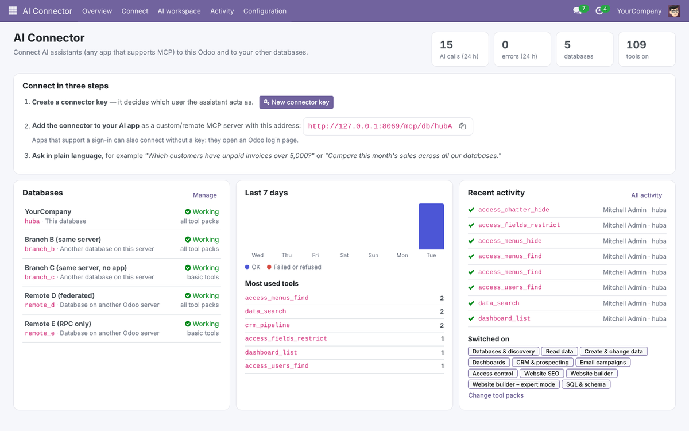
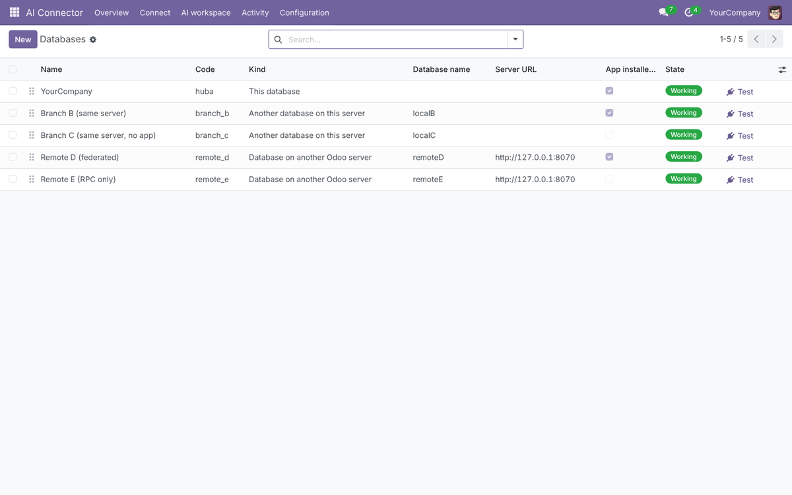
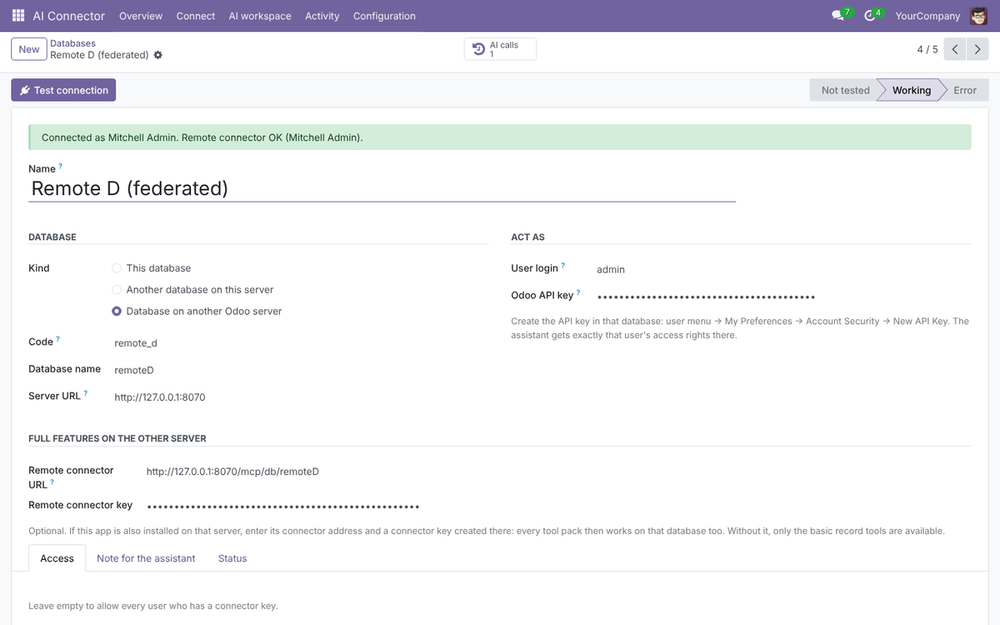
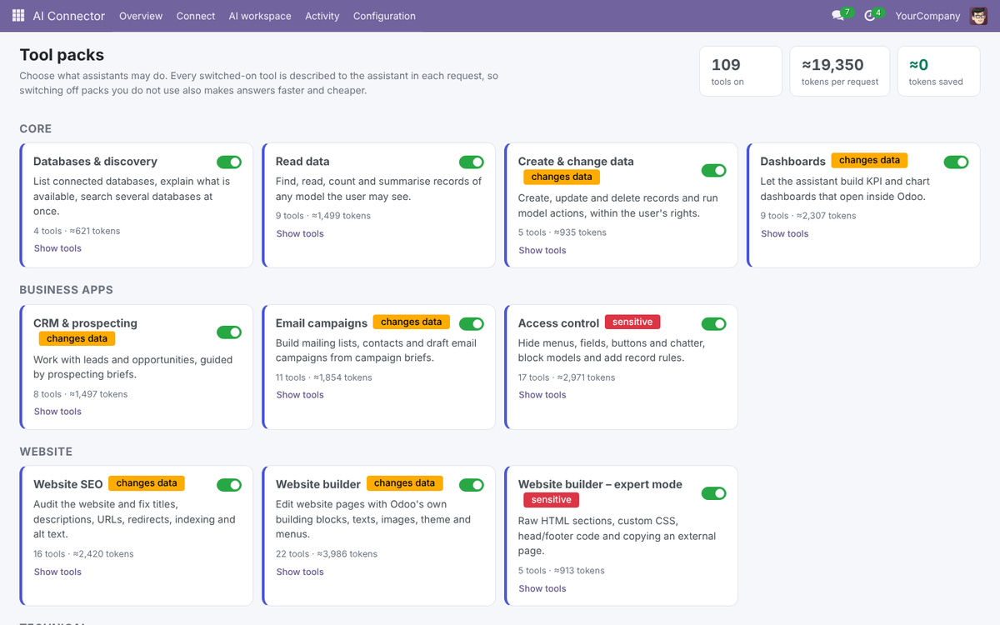
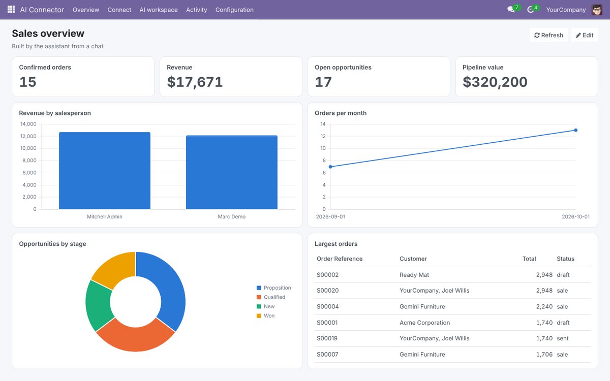
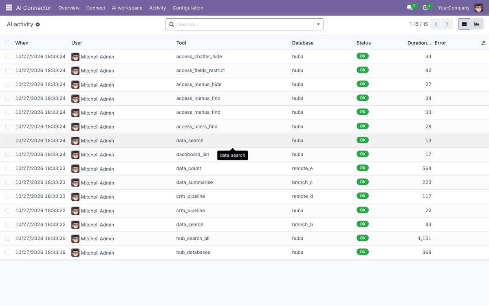
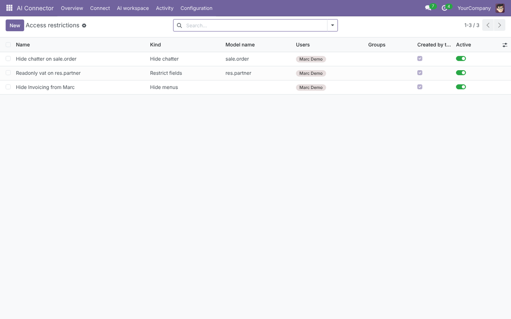
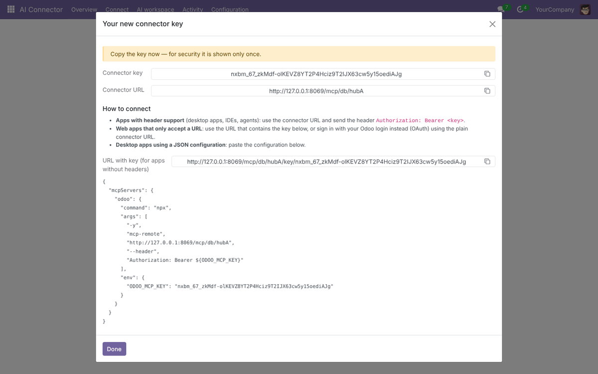
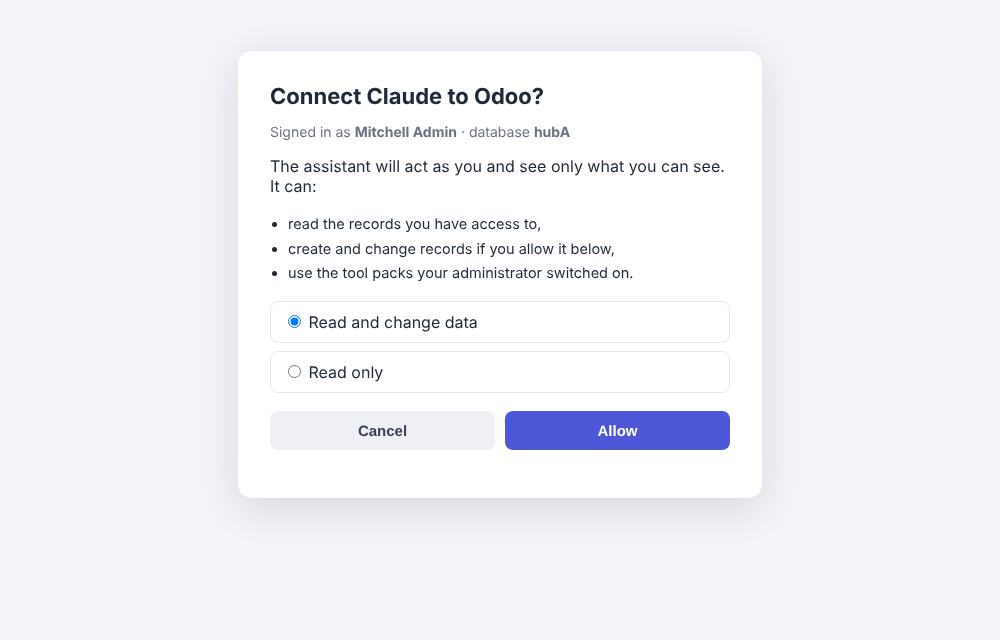

Give AI assistants a safe, audited way into Odoo. One connector address reaches this database, other databases on the same server and databases on other Odoo servers.
Odoo 18 Model Context Protocol (Streamable HTTP) 109 tools in 11 switchable packs Connector keys + OAuth 2.1 sign-in

Companies often run several Odoo databases: one per country, per branch or per brand. Register them once and the assistant can work in any of them, or compare them in a single question.
Every tool pack, using the signed-in user's own access rights.
Opened directly, authenticated with an Odoo API key of that database. All packs when the app is installed there; data tools otherwise.
Data tools over Odoo's external API, or every pack when the remote server runs this app too (calls are forwarded to its own connector).
The assistant sees a database choice on every tool, plus hub_search_all to run the same
search or count in every database at once ("How many open opportunities does each branch have?").


| Pack | Tools | Examples | Default |
|---|---|---|---|
| Databases & discovery | 4 | List connected databases, explain what is available, search all databases at once | On |
| Read data | 9 | Find models and fields, search, read, count, group and summarise any records the user may see | On |
| Create & change data | 5 | Create, update and delete records (delete needs a confirmation), run model actions, post notes | On |
| Dashboards | 9 | Build KPI, bar, line and pie charts, tables and record lists that open inside Odoo | On |
| CRM & prospecting | 8 | Pipeline summary, add leads with duplicate detection, follow-ups, win/lose; salespeople write "briefs" for the assistant | Off |
| Email campaigns | 11 | Mailing lists and contacts, draft campaigns from building blocks and products, schedule sending | Off |
| Access control | 17 | Hide menus, fields, buttons or the chatter for users and groups, block models, add record rules: all listed and reversible | Off |
| Website SEO | 16 | Audit pages, fix titles and descriptions, URLs with 301 redirects, headings, alt texts, robots.txt, sitemap | Off |
| Website builder | 22 | Create pages from Odoo blocks, edit texts, links and images, move sections, menus, colours and fonts, with undo | Off |
| Website builder – expert | 5 | HTML sections (sanitised), custom CSS, head/footer code, preview or import a public web page | Off |
| SQL & schema | 3 | Administrators only: tables, columns and read-only SELECT queries with a time limit | Off |
Packs are switched on and off on one screen. Every tool switched on is described to the assistant in every request, so switching off what you do not use also makes answers faster and cheaper; the screen shows the estimate.

"Make me a sales dashboard: revenue, open pipeline, revenue per salesperson and orders per month." The assistant builds it, checks the figures and sends a link. Every viewer only sees figures for records they are allowed to access.



Authorization: Bearer <key>; desktop apps get a ready-made JSON configuration; apps with a sign-in flow open an Odoo consent page instead.

Which AI apps work with it?
Apps that support remote MCP servers over Streamable HTTP, either with a header (connector key)
or with OAuth sign-in. Desktop apps that only start local servers can use the generated mcp-remote configuration.
Do I need a special Odoo setup?
No for one database per domain. On a server that hosts several databases without a
database filter, add the app to server_wide_modules so each database is reachable at /mcp/db/<name>;
the settings page explains it.
Does it change Odoo's core?
No. It depends only on base and web; CRM, Email Marketing and
Website tools switch on when those apps are installed.
Does the AI provider see my data?
Only the answers to the tools the assistant calls, within the user's rights and the
packs you allow. Keep sensitive packs off and use read-only keys where possible.
Is it tested?
The app ships with an automated test suite (protocol, data tools, dashboards, CRM, email campaigns, access
control, website, HTTP endpoint and the full OAuth flow).
Developed and supported by Nextbridge · www.nextbridge.pk · samiullah.3277@nxb.com.pk
Product names mentioned are trademarks of their respective owners; this app is not affiliated with them.